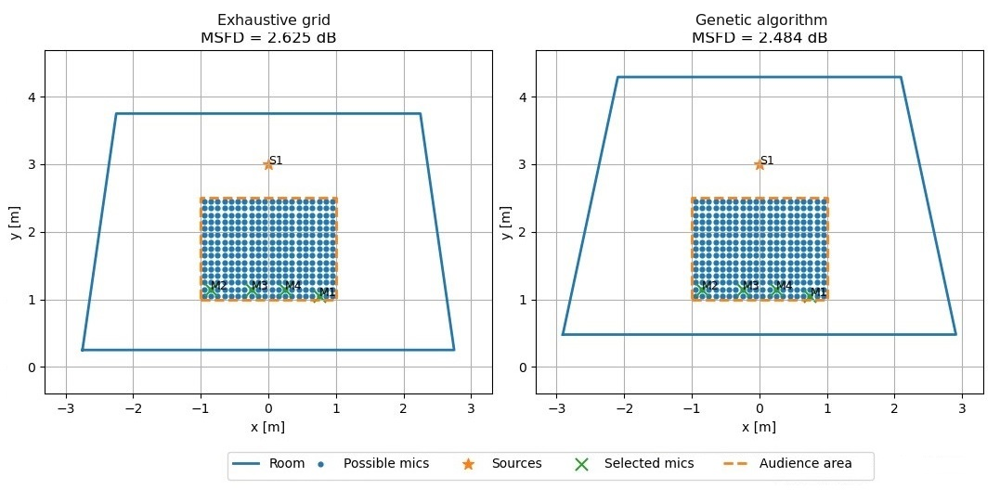
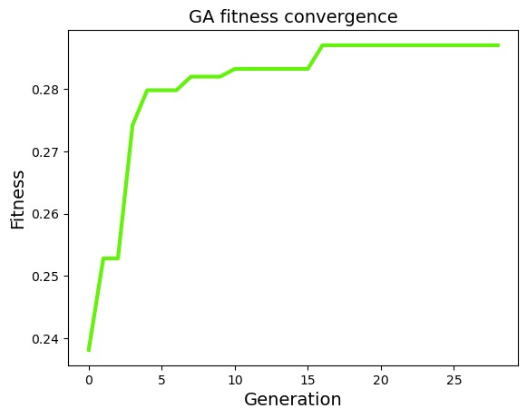

Research paper · To be presented at JAAS on November 27, 2026
Room Modal Optimizer
A tool for comparing and improving low-frequency sound fields in small rooms. It combines direct frequency-domain FEM, a spatial and spectral metric, and genetic optimization of room geometry.
I led the four-person team and programmed the entire computational backend. Joaquín Varela developed the associated GUI.
Juan Aldrey Alurralde Tomás Díaz Álvaro Agustín Lobo Joaquín Varela
Focus
Small-room acoustics 20–200 Hz
Methods
Gmsh · FEM MSFD · genetic algorithm
Status
To be presented at JAAS November 27, 2026
The problem
01
Room dimensions tell only part of the story.
At low frequencies, resonances and cancellations depend on the room's shape and on where the source and listeners are placed. A favorable dimensional ratio alone cannot describe the responses across an actual listening area, especially for non-rectangular rooms.
We built a local tool that evaluates candidate rooms through simulated source–receiver responses. Its objective is to reduce Mean Sound Field Deviation (MSFD), which combines spectral variation at each listening position with variation between positions.
Method
02
From geometry to a comparable acoustic score
01Candidate geometry
Change admissible room dimensions and vertices; hold the source and audience area fixed for the comparison.
02Mesh + direct FEM
Generate a 3D mesh and solve the forced acoustic field across the frequency range.
03Receiver responses
Sample the computed fields on a grid of listening positions.
04MSFD evaluation
Find the best admissible receiver combination and score the geometry without rerunning FEM for each combination.
05Genetic search
Use the score to guide the next candidate geometry, then repeat the evaluation.
The genetic algorithm explores geometry; receiver selection is performed within each candidate's already simulated sound field.
Checks
03
Three checks shaped the method.
01 / External comparison
BRAS CR2 benchmark
Measured and simulated responses for ten source–receiver pairs were compared over 20–200 Hz. The mean correlation was about 0.70 for second-order FEM: a semiquantitative check of broad spectral trends, not a claim of exact prediction.
02 / Numerical choice
First versus second order
First-order FEM preserved the MSFD ranking of the second-order reference across the tested cases (mean Spearman correlation 0.97), supporting a less costly solver for the search.
03 / Listening positions
Receiver placement matters
In the same room and audience area, admissible four-receiver sets ranged from 6.219 to 4.496 dB MSFD. The geometry alone did not determine the listening-area score.
Main result
04
Genetic search versus an exhaustive grid
Starting from a symmetric 5 × 4 × 3 m room, both methods searched the same allowed geometric ranges and used the same FEM and MSFD evaluation. The exhaustive search tested 4,375 grid configurations; the genetic algorithm explored continuous values within those ranges.
Best outcome in the reported experiment
Case
MSFD
Time
Improvement
Base room
4.74 dB
—
—
Exhaustive grid
2.62 dB
16 h 46 min
2.12 dB
Genetic algorithm
2.48 dB
56.62 min
2.26 dB
Both searches found similar symmetric trapezoidal rooms and selected the same receiver combination. The genetic run found a slightly lower MSFD in much less time in this experiment. Its continuous search and the grid's discrete sampling matter when interpreting that comparison.

Best geometries found by the exhaustive grid and genetic search. Source, audience area and selected receivers are marked.
How the search progressed
Converging on the reported result
Most of the fitness improvement happened early in the search. This means the algorithm could identify promising room geometries well before the full, roughly one-hour run was complete.

Fitness over the genetic algorithm generations.
Documentation
Research paper and code
This research paper will be presented at JAAS (Jornadas de Acústica, Audio y Sonido) on November 27, 2026. The English manuscript is available as a draft for review. The source code is available in the project repository.